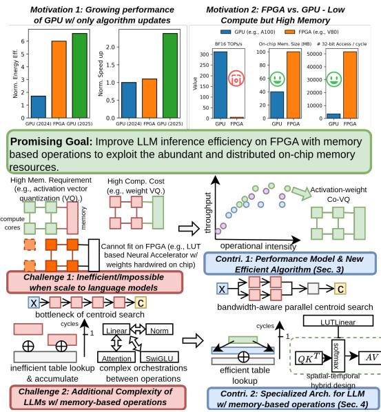
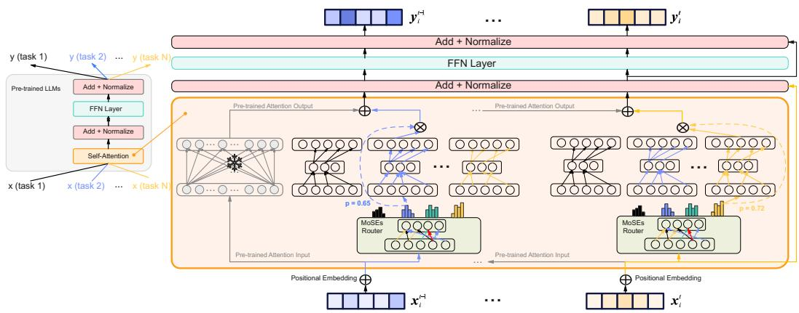
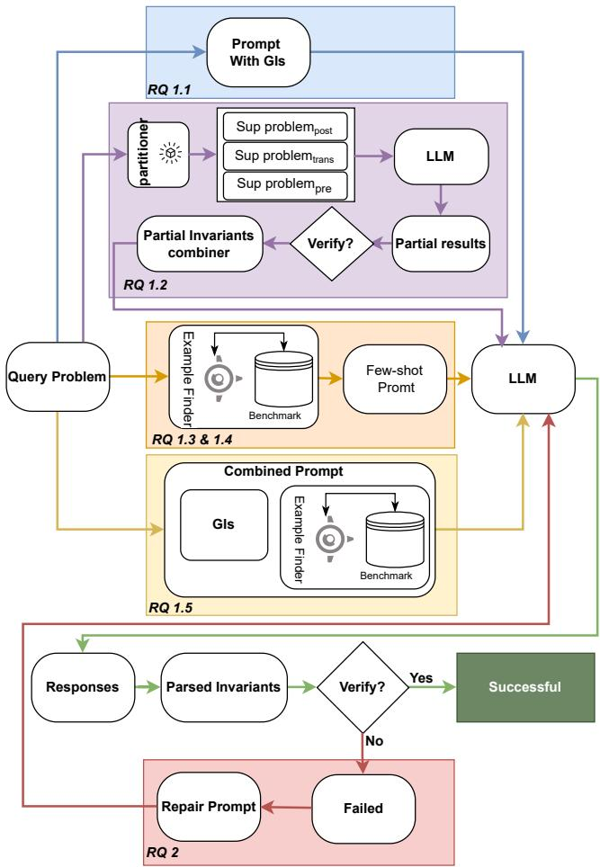

📝 微观深度解读
2025-11-10
为您精选了 6 篇高质量 AI 论文的深度解读
大语言模型
奇异值分解
谱指纹
知识产权保护
AI生态系统透明度
推荐分数: 0.513
📖 简介：本文提出了GhostSpec，一种轻量级且高效的方法，用于验证大语言模型（LLM）的来源和血统。通过对内部注意力权重矩阵进行奇异值分解，GhostSpec生成不变谱指纹，能够抵抗多种模型修改。该方法无需访问训练数据，且在多种复杂场景下表现出色，有效提升了知识产权保护和AI生态系统的透明度。

大型语言模型
软件开发
社会技术基础理论
平衡控制
管理策略
推荐分数: 0.481
📖 简介：本文通过对22名软件从业者的访谈，采用社会技术基础理论分析了大型语言模型（LLMs）在软件开发中的双重影响。研究识别了LLMs的优势（如提升效率、改善开发者心智模型）与劣势（如技能退化、团队协作障碍），并提出了“平衡控制”的管理策略，帮助开发者和管理者有效利用LLMs，同时规避潜在风险。

大型语言模型
FPGA加速器
内存计算
激活-权重共同量化
二维查找表操作
推荐分数: 0.479
📖 简介：本文提出了LUT-LLM，一种基于内存计算的FPGA加速器，旨在提高大型语言模型（LLM）推理的效率和能效。通过激活-权重共同量化和二维查找表操作，LUT-LLM在AMD V80 FPGA上实现了显著低于GPU的延迟和更高的能效，解决了传统算术计算在FPGA上的性能瓶颈问题。

查看详细解读 →
Rep2Text
大型语言模型
token表示
自回归文本重建
泛化能力
推荐分数: 0.467
📖 简介：本文提出了Rep2Text框架，旨在从大型语言模型（LLM）的最后一个token表示中恢复原始输入文本。该方法通过可训练的适配器将压缩表示投影到解码模型的嵌入空间，实现自回归文本重建。实验表明，Rep2Text能有效恢复超过一半的16-token序列信息，并在不同模型和分布外数据上展示了良好的泛化能力。

子专家混合
持续学习
灾难性遗忘
知识隔离
模型扩展
推荐分数: 0.460
📖 简介：本文提出了一种名为“子专家混合”（Mixtures of SubExperts, MoSEs）的新框架，旨在解决大型语言模型在持续学习中面临的灾难性遗忘问题。MoSEs通过集成稀疏的子专家网络和任务特定的路由机制，实现了知识的隔离与重用，确保模型在学习新任务时有效保留旧知识，同时以亚线性方式扩展模型容量。实验结果显示，MoSEs在知识保留和任务适应性方面显著优于传统方法。

查看详细解读 →
大型语言模型
循环不变式
生成与修复
逻辑整合
推理修复
推荐分数: 0.383
📖 简介：本文系统评估了大型语言模型（LLMs）在生成和修复程序循环不变式的能力。研究发现，LLMs在生成不变式的成功率最高可达78%，但修复能力仅为16%。通过提供结构化的辅助信息，如领域知识和示例，显著提升了生成性能。论文揭示了LLMs在逻辑整合和推理修复方面的局限性，为未来研究提供了重要指导。

查看详细解读 →